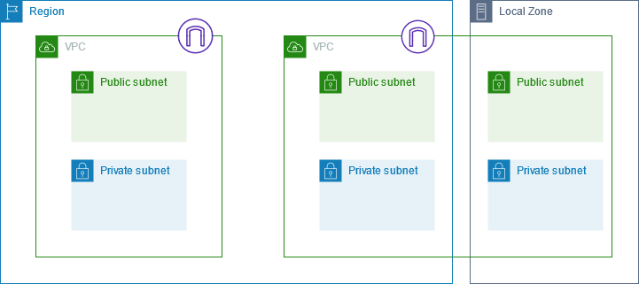
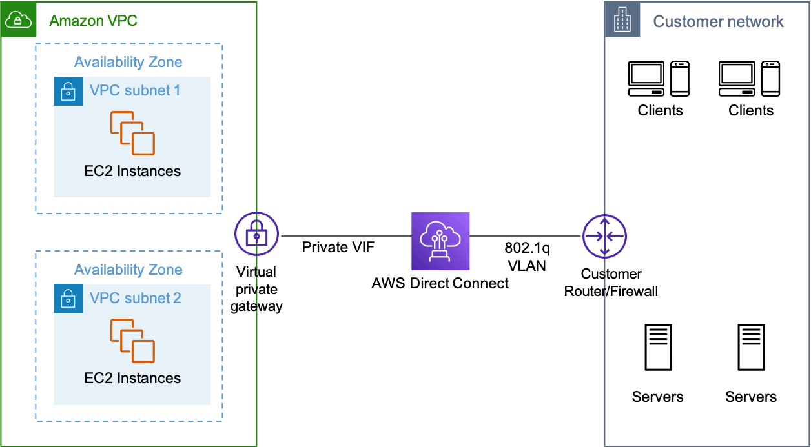
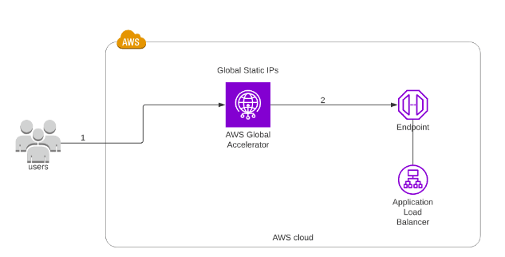
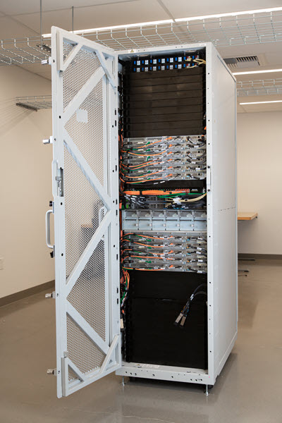
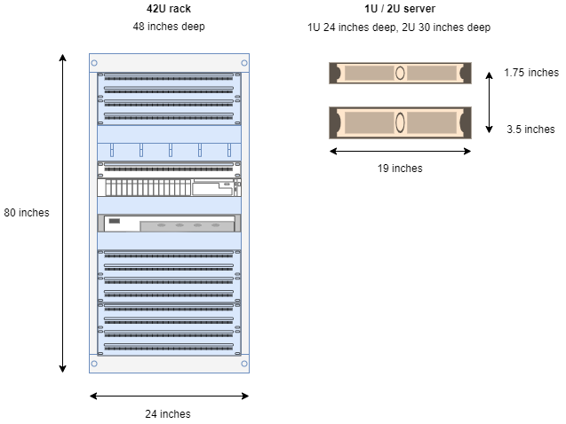

REDE & ENTREGA DE CONTEÚDO
Amazon Virtual Private Cloud (VPC)
Um Amazon Virtual Private Cloud (VPC) é uma rede virtual dedicada à sua conta AWS.
Use como analogia, ter seu próprio data center dentro da AWS.
Ele é logicamente isolado de outras redes virtuais na AWS Cloud.
O seguinte diagrama mostra uma VPC, que possui uma sub-rede em cada zona de disponibilidade na região, instâncias do EC2 em cada sub-rede e um gateway da Internet para permitir a comunicação entre os recursos em sua VPC e a Internet:

Oferece controle total sobre o ambiente de rede virtual, incluindo seleção de intervalos de IP, criação de sub-redes e configuração de tabelas de roteamento e gateways.
Você pode iniciar seus recursos AWS, como instâncias Amazon EC2, em sua VPC.
Quando você cria uma VPC, é necessário especificar um intervalo de endereços IPv4 para a VPC na forma de um bloco de Classless Inter-Domain Routing (CIDR), por exemplo, 10.0.0.0/16.
Uma VPC abrange todas as Zonas de Disponibilidade (AZ) na região.
Você tem controle total sobre quem tem acesso aos recursos AWS dentro de sua VPC.
Você pode criar seus próprios intervalos de endereços IP e criar sub-redes, tabelas de roteamento e gateways de rede.
Quando você cria sua conta AWS pela primeira vez, uma VPC padrão é criada para você em cada região AWS, com uma sub-rede em cada AZ (zona de disponibilidade).
Por padrão, você pode criar até 5 VPCs por região.
Uma VPC padrão é automaticamente criada para cada conta AWS na primeira vez que os recursos Amazon EC2 são provisionados.
A VPC padrão possui todas as sub-redes públicas.
As sub-redes públicas são sub-redes que têm:
- "Auto-atribuir endereço IPv4 público" definido como "Sim".
- A tabela de roteamento da sub-rede tem um Gateway de Internet anexado.
As instâncias na VPC padrão sempre têm tanto um endereço IP público quanto um endereço IP privado.
Os nomes das AZs (zonas de disponibilidade) são mapeados para diferentes zonas para diferentes usuários (ou seja, a AZ "ap-southeast-2a" pode mapear para uma zona física diferente para um usuário diferente).
Componentes de uma VPC:
- Virtual Private Cloud: Uma rede virtual logicamente isolada na AWS. Você define o espaço de endereço IP de uma VPC a partir dos intervalos que você seleciona.
- Subnet: Um segmento do intervalo de endereços IP de uma VPC onde você pode colocar grupos de recursos isolados (um para um mapeamento com uma AZ).
- Internet Gateway: A parte da Amazon VPC de uma conexão com a Internet pública.
- NAT Gateway: Um serviço de Tradução de Endereço de Rede (NAT) gerenciado e altamente disponível para seus recursos em uma sub-rede privada acessarem a Internet.
- Conexão VPN de hardware: Uma conexão VPN baseada em hardware entre sua Amazon VPC e seu data center, rede doméstica ou instalação de co-localização.
- Virtual Private Gateway: A parte da Amazon VPC de uma conexão VPN.
- Customer Gateway: Sua parte de uma conexão VPN.
- Roteador: Roteadores interconectam sub-redes e direcionam o tráfego entre Gateways de Internet, Gateways Privados Virtuais, Gateways NAT e sub-redes.
- Conexão de Interligação: Uma conexão de interligação permite que você roteie o tráfego via endereços IP privados entre duas VPCs interligadas.
- Pontos de Extremidade da VPC: Permitem conectividade privada a serviços hospedados na AWS, de dentro da sua VPC, sem usar um Gateway de Internet, VPN, dispositivos de Tradução de Endereços de Rede (NAT) ou proxies de firewall.
- Gateway de Internet somente de saída: Um gateway com estado para fornecer acesso de saída somente para o tráfego IPv6 da VPC para a Internet.
Opções para se conectar com segurança a uma VPC:
- VPN gerenciada pela AWS: Rápido de configurar.
- Direct Connect: Alta largura de banda, baixa latência, mas leva semanas a meses para configurar.
- VPN CloudHub: Usado para conectar vários locais à AWS.
- VPN de software: Usar software de terceiros.
Uma Interface de Rede Elástica (ENI) é um componente lógico de rede que representa uma NIC.
ENIs podem ser anexadas e desanexadas de instâncias EC2, e a configuração da ENI será mantida.
Flow Logs capturam informações sobre o tráfego IP que entra e sai das interfaces de rede em uma VPC.
Dados de Flow Log são armazenados usando o Amazon CloudWatch Logs.
Os Flow Logs podem ser criados nos seguintes níveis:
- VPC.
- Subnet.
- Interface de rede.
Conexões de Interligação podem ser criadas com VPCs em diferentes regiões (disponíveis na maioria das regiões agora).
Sub-redes
Após criar uma VPC, você pode adicionar uma ou mais sub-redes em cada Zona de Disponibilidade.
Ao criar uma sub-rede, você especifica o bloco CIDR para a sub-rede, que é um subconjunto do bloco CIDR da VPC.
Cada sub-rede deve residir inteiramente em uma Zona de Disponibilidade e não pode abranger zonas.
Tipos de sub-rede:
- Se o tráfego de uma sub-rede for roteado para um gateway de internet, a sub-rede é conhecida como sub-rede pública.
- Se uma sub-rede não tiver uma rota para o gateway de internet, a sub-rede é conhecida como sub-rede privada.
- Se uma sub-rede não tiver uma rota para o gateway de internet, mas tiver seu tráfego roteado para um gateway privado virtual para uma conexão VPN, a sub-rede é conhecida como sub-rede somente VPN.
- Se uma sub-rede não tem rotas para destinos fora de sua VPC, a sub-rede é conhecida como sub-rede Isolada.
O diagrama a seguir mostra duas VPCs em uma região:
Cada VPC tem sub-redes públicas e privadas, além de um gateway da Internet.
É possível adicionar sub-redes opcionalmente a uma zona local, conforme mostrado no diagrama.
Uma zona local é uma implantação de infraestrutura da AWS que coloca serviços selecionados mais próximos de seus usuários finais. Quando uma zona local é usada, os usuários finais podem executar aplicações que exigem latências de milissegundos da ordem de um dígito.
Um Gateway de Internet é um componente da VPC escalável horizontalmente, redundante e altamente disponível que permite a comunicação entre instâncias em sua VPC e a internet.
Firewalls
As Listas de Controle de Acesso à Rede (ACLs) fornecem uma camada de firewall/segurança no nível de sub-rede.
Os Security Groups fornecem uma camada de firewall/segurança no nível de instância.
A tabela abaixo descreve algumas diferenças entre Security Groups e Network ACLs:
| Security Group | Network ACL |
|---|---|
| Opera no nível de instância (interface) | Opera no nível de sub-rede |
| Suporta apenas regras de permissão | Suporta regras de permissão e negação |
| Stateful | Stateless |
| Avalia todas as regras | Processa as regras na ordem |
| Aplica-se a uma instância apenas se associada a um grupo | Aplica-se automaticamente a todas as instâncias nas sub-redes com as quais está associada |
Assistente de VPC
O Assistente de VPC pode ser usado para criar as quatro configurações a seguir:
-
VPC com uma única sub-rede pública:
- Suas instâncias são executadas em uma seção privada e isolada da nuvem AWS com acesso direto à Internet.
- Listas de controle de acesso à rede e grupos de segurança podem ser usados para fornecer controle estrito sobre o tráfego de entrada e saída para suas instâncias.
- Cria uma rede /16 com uma sub-rede /24. As instâncias da sub-rede pública usam IPs elásticos ou IPs públicos para acessar a Internet.
-
VPC com sub-redes públicas e privadas:
- Além de conter uma sub-rede pública, esta configuração adiciona uma sub-rede privada cujas instâncias não são acessíveis pela Internet.
- As instâncias na sub-rede privada podem estabelecer conexões de saída com a Internet através da sub-rede pública usando Tradução de Endereços de Rede (NAT).
- Cria uma rede /16 com duas sub-redes /24.
- As instâncias da sub-rede pública usam IPs elásticos para acessar a Internet.
- As instâncias da sub-rede privada acessam a Internet via Tradução de Endereços de Rede (NAT).
-
VPC com sub-redes públicas e privadas e Acesso VPN de Hardware:
- Esta configuração adiciona uma conexão de Rede Privada Virtual (VPN) de IPsec entre sua Amazon VPC e seu data center, estendendo efetivamente seu data center para a nuvem e fornecendo acesso direto à Internet para instâncias da sub-rede pública em sua Amazon VPC.
- Cria uma rede /16 com duas sub-redes /24.
- Uma sub-rede está diretamente conectada à Internet, enquanto a outra está conectada à sua rede corporativa via um túnel VPN IPsec.
-
VPC com apenas uma Sub-rede Privada e Acesso VPN de Hardware:
- Suas instâncias são executadas em uma seção privada e isolada da nuvem AWS com uma sub-rede privada cujas instâncias não são acessíveis pela Internet.
- Você pode conectar esta sub-rede privada ao seu data center corporativo via um túnel VPN IPsec.
- Cria uma rede /16 com uma sub-rede /24 e provisiona um túnel VPN IPsec entre sua Amazon VPC e sua rede corporativa.
Instâncias NAT
- As instâncias NAT são gerenciadas por você.
- Usadas para permitir que instâncias na sub-rede privada acessem a Internet.
- Ao criar instâncias NAT, sempre desative a verificação de origem/destino na instância.
- As instâncias NAT devem estar em uma única sub-rede pública.
- As instâncias NAT precisam ser atribuídas a grupos de segurança.
Gateways NAT
- Os gateways NAT são gerenciados pela AWS.
- Os gateways NAT são altamente disponíveis em cada AZ na qual são implantados.
- São preferidos pelas empresas.
- Podem escalar automaticamente até 45 Gbps.
- Não é necessário aplicar patches.
- Não associados a nenhum grupo de segurança.
Diferenças entre Instâncias NAT e Gateways NAT:
| Instância NAT | Gateway NAT |
|---|---|
| Gerenciado por você (por exemplo, atualizações de software) | Gerenciado pela AWS |
| Dimensionamento manual para cima (tipo de instância) e uso de rede aprimorada | Escalabilidade elástica de até 45 Gbps |
| Sem alta disponibilidade - alta disponibilidade roteirizada/escalada automaticamente possível usando várias instâncias NAT em várias sub-redes | Fornece alta disponibilidade automática dentro de uma AZ e pode ser colocada em várias AZs |
| Necessidade de atribuir grupo de segurança | Sem grupos de segurança |
| Pode ser usado como um host bastião | Não pode ser acessado por SSH |
AWS Direct Connect (DX):
O AWS Direct Connect é um serviço de rede que fornece uma alternativa ao uso da Internet para conectar os locais no local do cliente à AWS.
Os dados são transmitidos por meio de uma conexão de rede privada entre a AWS e o centro de dados ou rede corporativa do cliente.
Benefícios do Direct Connect:
- Redução de custos ao usar grandes volumes de tráfego.
- Aumento da confiabilidade (desempenho previsível).
- Aumento da largura de banda (largura de banda previsível).
- Diminuição da latência.
Cada conexão AWS Direct Connect pode ser configurada com uma ou mais interfaces virtuais (VIFs).
- As VIFs públicas permitem acesso a serviços públicos como S3, EC2 e DynamoDB.
- As VIFs privadas permitem acesso à sua VPC.
A partir do Direct Connect, você pode se conectar a todas as Zonas de Disponibilidade dentro da região.
Você pode estabelecer conexões IPSec sobre VIFs públicas para regiões remotas.
O Direct Connect é cobrado por horas de porta e transferência de dados.
Está disponível em 1 Gbps e 10 Gbps.
Velocidades de 50 Mbps, 100 Mbps, 200 Mbps, 300 Mbps, 400 Mbps e 500 Mbps podem ser adquiridas por meio de Parceiros do AWS Direct Connect.
Cada conexão consiste em uma única conexão dedicada entre portas no roteador do cliente e um roteador da Amazon.
Para alta disponibilidade, você deve ter 2 conexões DX - podem ser ativas/ativas ou ativas/standby.
As tabelas de roteamento precisam ser atualizadas para apontar para uma conexão Direct Connect.
AWS Global Accelerator:
O AWS Global Accelerator é um serviço que melhora a disponibilidade e o desempenho de aplicativos com usuários locais ou globais.
Ele fornece endereços IP estáticos que funcionam como um ponto de entrada fixo para os pontos finais do aplicativo em uma ou várias Regiões da AWS, como Application Load Balancers, Network Load Balancers ou instâncias EC2.
Usa a rede global da AWS para otimizar o caminho dos usuários para aplicativos, melhorando o desempenho do tráfego TCP e UDP.
O AWS Global Accelerator monitora continuamente a saúde dos pontos finais do aplicativo e detectará um ponto final não saudável, redirecionando o tráfego para pontos finais saudáveis em menos de 1 minuto.
Detalhes e Benefícios:
- Usa endereços IP anycast estáticos redundantes (dois) em diferentes zonas de rede (A e B).
- O par redundante é anunciado globalmente.
- Usa Localidades Edge da AWS - os endereços são anunciados de várias localidades de borda ao mesmo tempo.
- Os endereços são associados a recursos ou pontos finais regionais da AWS.
- Os endereços IP do AWS Global Accelerator servem como a interface frontal dos aplicativos.
- Distribuição inteligente de tráfego: Roteia conexões para o ponto de presença mais próximo dos aplicativos.
- Os alvos podem ser instâncias Amazon EC2 ou Balanceadores de Carga Elásticos (ALB e NLB).
- Usando os endereços IP estáticos, você não precisa fazer alterações voltadas para o cliente ou atualizar registros DNS ao modificar ou substituir pontos finais.
- Os endereços são atribuídos ao seu acelerador enquanto ele existir, mesmo se você desativar o acelerador e ele não aceitar ou rotear mais tráfego.
AWS Outposts:
O AWS Outposts é um serviço totalmente gerenciado que estende a infraestrutura, os serviços, as APIs e as ferramentas da AWS no local do cliente.
Ao fornecer acesso local à infraestrutura gerenciada pela AWS, o AWS Outposts permite que os clientes criem e executem aplicações on-premises usando as mesmas interfaces de programação que nas regiões da AWS, ao mesmo tempo que usam recursos locais de computação e armazenamento para menor latência e necessidades de processamento de dados locais.
O AWS Outposts é ideal para cargas de trabalho que exigem acesso de baixa latência a sistemas no local, processamento local de dados, residência de dados e migração de aplicativos com interdependências de sistemas locais.
Os serviços da AWS, como Amazon EC2, Amazon EBS, Amazon S3, Amazon VPC, Amazon ECS/EKS, Amazon RDS e Amazon EMR, são executados localmente no Outposts, e você pode acessar a gama completa de serviços da AWS disponíveis na região para construir, gerenciar e dimensionar seus aplicativos no local usando serviços e ferramentas familiares da AWS.
O AWS Outposts está disponível como um rack de 42U ou servidores 1U / 2U.
Os serviços que você pode executar no AWS Outposts incluem:
- Amazon EC2.
- Amazon EBS.
- Amazon S3.
- Amazon VPC.
- Amazon ECS/EKS.
- Amazon RDS.
- Amazon EMR.